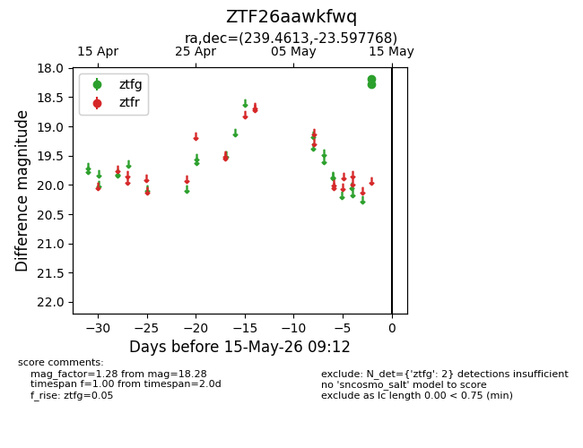
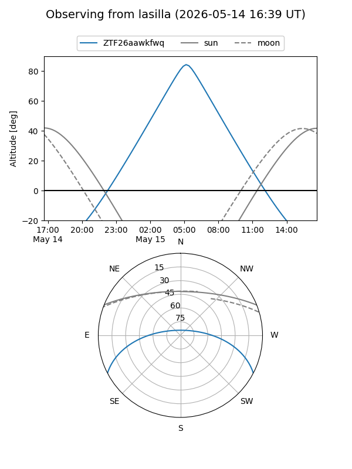
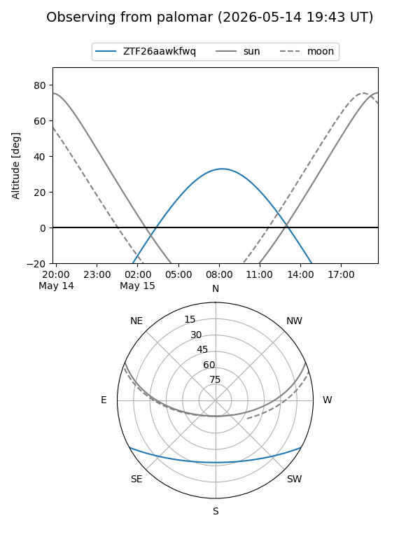

ZTF26aawkfwq
Target ZTF26aawkfwq at 2026-05-15 09:14
Aliases and brokers:
FINK: link
Lasair: link
ALeRCE: link
alt names
ZTF26aawkfwq (ztf,fink_ztf)
Coordinates:
equatorial (ra, dec) = 239.4613,-23.59777
equatorial (HMS+DMS) = 15:57:50.71,-23:35:51.97
galactic (l, b) = (348.9152,+22.19809)
Flags:
Photometry:
last ztfg=18.28
2 ztfg detections
Lightcurve

Visibility


Additional plots